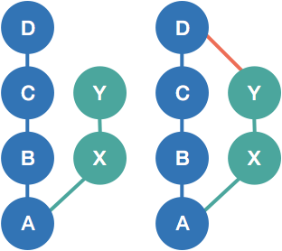
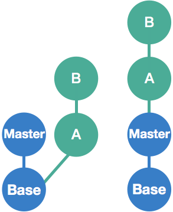

git init
git status
- .gitignore // 加進去的檔案 git status 不會秀出
git add
git commit
- 50/72 rule.
- Unique hash value, 基本上前六碼就足以辨識
git log
- HEAD // 下一個 commit 會加上的位置
1 2 3 4 5 6 7 8 9 10 11 12 13 14 15 16 17 18 19 20 21
| $ git log <hash value> -n1 $ git log <hash value>^ -n1 $ git log <hash value>^^ -n1 $ git log <hash value> -n1 --oneline $ git log <hash value>~2 -n1 $ git log --oneline <file> $ git log --grep <key-word> $ git log --decorate
|
git show
1 2
| $ git show <hash value>
|
git diff // 看目前做了哪些修改
1 2 3 4 5
| $ git diff --staged $ git diff <commit> <commit>
|
git reset
git branch
1 2 3 4 5 6 7 8
| $ git branch <name>; git checkout <name> $ git checkout -b <name> $ git branch -d <name>
|
git merge
1 2 3
| $ git merge <branch> --no-ff $ git add <conflict file>; git commit
|
- merge 前 (左圖)，merge 後 (右圖)

git rebase
1 2 3 4 5 6
| $ git rebase <new base> $ git rebase --onto Master Base B $ git rebase -I <開始> <結尾>
|

git stash
1 2 3
| $ git stash list $ git stash pop stash@{1} $ git stash drop stash@{2}
|
git blame
1 2
| $ git blame -L <start>,<end> <file> $ git blame -L :<function> <file>
|
Reference:
https://git-scm.com/book/en/v2
https://www.youtube.com/playlist?list=PLlyOkSAh6TwcvJQ1UtvkSwhZWCaM_S07d